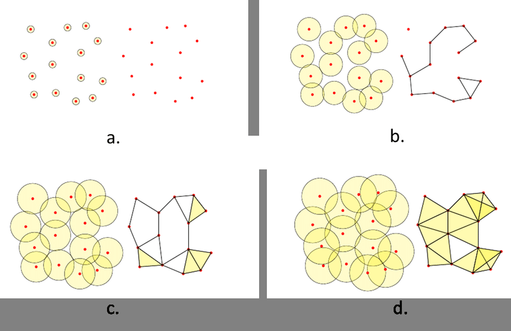

using MetricSpaces;
import CairoMakie as gl;
import Ripserer;
# import PersistenceDiagrams as Pd
import Plots;
function plot_barcode(bc)
Plots.plot(
Plots.plot(bc)
,Ripserer.barcode(bc)
)
end;3 Getting started
Now you are convinced that Julia is really nice and fast, and that Topological data analysis is a very unique tool. It is time to start applying!
3.1 Persistent homology
Let’s quickly review what is persistent homology and why it is useful.
Let \(M\) be a finite metric space.
3.1.1 Creating simplicial complexes
For each \(\epsilon > 0\) we create a simplicial complex \(K_\epsilon\) in such a way that \(\epsilon_1 < \epsilon_2\) implies \(K_{\epsilon} \subseteq K_{\epsilon'}\).
As you can guess, there are several ways to “undiscretize” a finite metric space into a simplicial complex.

There are some other simplicial complex constructions like the Alpha complex or the Cech complex, but the Vietoris-Rips has a good algorithm to calculate its homology.
3.1.2 Creating sequences of vector spaces
Applying the homology functor with field coefficients
\[ V_\epsilon = H_n(K_\epsilon) \]
on each of the simplicial complexes
\[ \{ K_\epsilon \subseteq K_{\epsilon'} \; \text{s.t.} \; \epsilon \leq \epsilon' \} \]
we obtain a sequence of vector spaces together with linear transformations
\[ \mathbb{V}(M) = \{ V_\epsilon \to V_{\epsilon'} \; \epsilon \leq \epsilon' \} \]
called a persistent vector space.
3.1.3 Simplifying
Some very nice theorems (see Oudot (2017) for a complete exposition) prove that a persistent vector space can be decomposed as a sum of interval modules, which are the fundamental blocks of persistent vector spaces. Each one of these blocks represent the birth and death of a generator. Thus, \(\mathbb{V}(M)\) can summarised in two equivalent ways:
as a barcode: a (multi)set of real intervals \(\{ [a_i, b_i) \subset \mathbb{R}, \; i \in I \}\).
as a persistence diagram: a subset of real plane above the diagonal of the form \(\{ (a_i, b_i) \in \mathbb{R}^2, \; i \in I \}\).
Each pair \((a_i, b_i)\) can be interpreted as follows: \(a_i\) is the value of \(\epsilon\) at which a feature (i.e. a generator of \(H_n(K_\epsilon)\)) was “born”, and this generator persisted until it reached \(b_i\). See the following image for the representation of a barcode.
We will use both these representations many times.

3.1.4 Distances on persistence diagrams and stability
The bottleneck distance can be defined on the set of persitence diagrams. Intuitively, it measures the “effort” to move the points of one diagram to the points of the other OR collapsing these points to the diagonal.
It is important to note that points very close to the diagonal (or, equivalently, intervals very short on a barcode) can be seen as “noise” or “non relevant features”: they represent features that were born and lived for just a small time.
3.1.5 Stability of the bottleneck distance
This distance is much more useful because of the stability theorem: metric spaces close to each other yield barcodes close to each other:
\[ d_b(\mathbb{V}(M), \mathbb{V}(N)) \leq d_{GH}(M, N) \]
where \(M, N\) are finite metric spaces, \(d_b\) is the bottleneck distance and \(d_{GH}\) is the Gromov-Hausdorff distance on the set of metric spaces.
Why is stability useful?
Suppose we have several metric spaces \(X_1, \ldots, X_n\) (let’s say photos or 3d-objects) and we want to group these spaces by similarity (cats in one group, dogs in another). Calculating the Gromov-Hausdorff distance is a very expensive calculation!1. Instead, we can use the bottleneck distance of each barcode \(\mathbb{V}(X_i)\) as a approximation to the geometry of \(X_i\).
So, if our barcode retains enough information about \(X_i\), we can use
\[ d_b(\mathbb{V}(X_i), \mathbb{V}(X_j)) \quad \text{as a good approximation to} \quad d_{GH}(X_i, X_j). \]
The following beautiful gifs can be found at the Ripserer.jl documentation, a Julia package that implements an efficient algorithm to calculate the barcode using the Vietoris-Rips filtration.


3.2 Some classic examples in topology
Let’s start exploring some common objects in topology.
3.2.1 Torus
X = torus(1500)
gl.scatter(X)
bc = Ripserer.ripserer(X, dim_max = 1, threshold = 4)
plot_barcode(bc)3.2.2 Circle
X = sphere(300, dim = 2)
gl.scatter(X)
bv = Ripserer.ripserer(X, dim_max = 1)
plot_barcode(bc)3.2.3 Sphere
X = sphere(300, dim = 3)
gl.scatter(X)
bc = Ripserer.ripserer(X, dim_max = 2)
plot_barcode(bc)3.2.4 A square with a hole
X = rand(gl.Point2, 1500)
filter!(x -> (x[1]-0.5)^2 + (x[2]-0.5)^2 > 0.03, X)
gl.scatter(X)
bc = Ripserer.ripserer(X, dim_max = 1, verbose = true)
plot_barcode(bc)3.2.5 Two circles
X = vcat(
sphere(150, dim = 2)
,sphere(150, dim = 2) .|> x -> (x .+ (1, 1))
)
gl.scatter(X)
bc = Ripserer.ripserer(X, dim_max = 1, verbose = true)
plot_barcode(bc)3.3 A better way to represent barcodes
Even though the bottleneck distance is easier to calculate than the Gromov-Hausdorff distance, it is still a bit expensive for large barcodes.
Barcodes are nice but wild objects. They have variable length. To be able to use these tools in machine learning algorithms, we need to represent them in a vector or matrix with fixed size.
There are several ways to do that!
3.3.1 Persistence images
Persistence images is a technique that transform a set of barcodes into nxn matrices with values from 0 to 1. See Adams et al. (2017) for more detailes.
The idea is the following:
Plot the persistence diagram;
Plot gaussians around each point;
Pixelate them.

For example, the two barcodes below
using PersistenceDiagrams, Plots
diag_1 = PersistenceDiagram([(0, 1), (0, 1.5), (1, 2)]);
diag_2 = PersistenceDiagram([(1, 2), (1, 1.5)]);
image = PersistenceImage([diag_1, diag_2])
Plots.plot(
Plots.plot(diag_1)
,Plots.plot(diag_2)
)are transformed into these matrices (plotted as heatmaps):
Plots.plot(
heatmap(image(diag_1))
,heatmap(image(diag_2))
)
Adams, Henry, Tegan Emerson, Michael Kirby, Rachel Neville, Chris Peterson, Patrick Shipman, Sofya Chepushtanova, Eric Hanson, Francis Motta, and Lori Ziegelmeier. 2017. “Persistence Images: A Stable Vector Representation of Persistent Homology.” Journal of Machine Learning Research 18 (8): 1–35.
Barsocchi, Paolo, Pietro Cassara, Daniela Giorgi, Davide Moroni, and Maria Pascali. 2018. “Computational Topology to Monitor Human Occupancy.” Proceedings 2 (January): 99. https://doi.org/10.3390/proceedings2020099.
Ghrist, Robert. 2008. “Barcodes: The Persistent Topology of Data.” Bulletin of the American Mathematical Society 45 (1): 61–75.
Oudot, Steve Y. 2017. Persistence Theory: From Quiver Representations to Data Analysis. Vol. 209. American Mathematical Soc.
see this excellent article by Matt Piekenbrock to get an idea of the complexity involved.↩︎